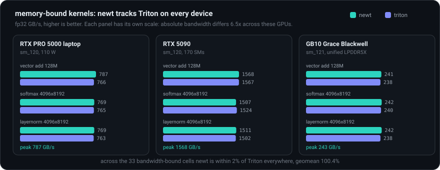
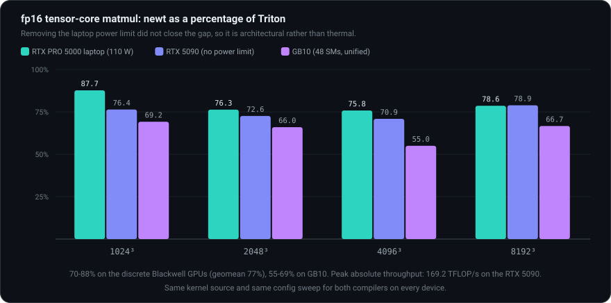
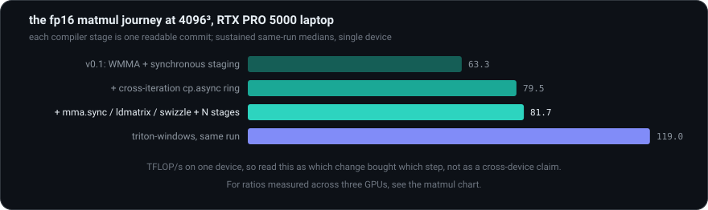

Measured against real Triton (triton-windows on Windows, triton 3.6.0 on Linux) and torch (which calls NVIDIA's hand-tuned cuBLAS/cuDNN libraries) on three GPUs: an RTX PRO 5000 Blackwell laptop, an RTX 5090 desktop, and a GB10 Grace Blackwell (DGX Spark).
The three GPUs were chosen to vary the axes a single-machine comparison confounds: compute capability, host architecture, and memory system.
| RTX PRO 5000 Blackwell Laptop | RTX 5090 | GB10 (DGX Spark) | |
|---|---|---|---|
| compute capability | sm_120 | sm_120 | sm_121 |
| SMs | - | 170 | 48 |
| memory | 24 GB GDDR7 | 31.3 GB GDDR7 | 121.6 GB LPDDR5X, unified |
| power | ~110 W, throttles | desktop, no observed throttling | unified SoC |
| host | Windows 11, x86_64 | Ubuntu 24.04, x86_64 | Ubuntu 24.04, aarch64 |
| peak measured bandwidth | 787 GB/s | 1568 GB/s | 243 GB/s |
Identical kernel source (modulo nl/tl) and identical config sweeps;
medians over 50 reps with the L2 cache flushed between reps; python benchmarks/bench.py
--cooldown 300 run the same way on all three machines. The laptop is a 110 W part that
thermally throttles under sustained load, so its suites start from a similar thermal state and
within-run columns are the fair comparison. NVML was broken on the RTX 5090 host by a driver
userspace and kernel-module mismatch, so there is no thermal telemetry for it; the evidence that
it did not throttle is that a cold run reproduces the sustained run within noise. The raw tables,
including the excluded torch anomalies, live in
benchmarks/results.md.

Across the 33 bandwidth-bound cells on the three devices, newt is within 2% of Triton everywhere, geomean 100.4%, and marginally ahead on average. It also records the highest measured streaming bandwidth of the three frameworks on both the laptop and the 5090: peak bandwidth is 787 GB/s on the RTX PRO 5000 laptop, 1568 GB/s on the RTX 5090, and 243 GB/s on GB10's unified LPDDR5X. That parity now holds across two memory architectures, not just one board.
One caveat worth stating explicitly: the 1M-element vector add is launch-latency-bound rather than bandwidth-bound, and newt sits at 89-92% of Triton there. That is dispatch overhead, not memory traffic, and it is why the claim is parity on bandwidth-bound sizes rather than parity on every point.

Peak newt fp16 throughput is 169.2 TFLOP/s on the RTX 5090 at 8192³, against 214.5 for Triton and 216.9 for torch/cuBLAS in the same run. On the RTX PRO 5000 laptop the peak is 87.6 TFLOP/s at 4096³, and on GB10 it is 45.2 TFLOP/s at 2048³. As a ratio to Triton, per device and size:
| fp16 matmul, newt as % of Triton | 1024³ | 2048³ | 4096³ | 8192³ |
|---|---|---|---|---|
| RTX PRO 5000 laptop (110 W) | 87.7 | 76.3 | 75.8 | 78.6 |
| RTX 5090 (no power limit) | 76.4 | 72.6 | 70.9 | 78.9 |
| GB10 (48 SMs, unified memory) | 69.2 | 66.0 | 55.0 | 66.7 |
That is 70-88% of Triton on the discrete Blackwell GPUs (geomean 77%) and 55-69% on GB10; across all three devices and four sizes the geomean is 72%. Torch/cuBLAS ran in the same suites as the hand-tuned vendor reference and is the fastest of the three at 8192³ on the RTX 5090, at 216.9 TFLOP/s. On GB10 its fp16 column is excluded from comparison for the reason given under Portability below.
The obvious hypothesis for the laptop ratios was throttling: a 110 W part clocks down under sustained load, and if newt's schedule were more sensitive to that than Triton's, the ratio would understate newt. Removing the power limit refutes it. Going from the laptop to an unconstrained RTX 5090 roughly doubled absolute throughput, from 87.6 to 169.2 TFLOP/s at the peak, and the ratio to Triton did not improve. It slightly worsened.
A cold-start run on the 5090, after 600 s of idle, reproduces the sustained run within noise: 170.2 against 169.2 TFLOP/s at 8192³. On a card that does not throttle there is no separate cold regime at all. An earlier laptop-only measurement reported newt at roughly 92% of Triton on a cold start; that figure was an artifact of how the two compilers' baselines decay on a thermally limited part, it does not reproduce anywhere else, and it is withdrawn.
What is left is a real scheduling gap with two distinct causes. On large GPUs it is Triton's finest-grained machinery: strength-reducing address computations across loop iterations and specializing warps into producer/consumer roles. On a small-SM part such as GB10 a second cause dominates, tile and wave quantization plus the absence of split-K and CTA swizzle; newt's GB10 throughput actually falls as the problem grows, from 45.2 TFLOP/s at 2048³ to 28.4 at 4096³ and 23.6 at 8192³, which is what tile quantization on 48 SMs looks like. All of these are known and documented, and none of them is heat.

| matmul fp16, RTX PRO 5000 laptop (TFLOP/s) | 1024³ | 2048³ | 4096³ | 8192³ |
|---|---|---|---|---|
| newt v0.1 (WMMA, sync staging) | 39.1 | 69.1 | 63.3 | 62.8 |
| + cross-iteration cp.async ring | 63.7 | 70.6 | 79.5 | 70.1 |
| + mma.sync / ldmatrix / swizzle + N stages | 67.2 | 82.7 | 81.7 | 77.0 |
| triton-windows (same run) | 81.2 | 101.1 | 119.0 | 100.8 |
| torch / cuBLAS (same run) | 67.8 | 103.1 | 100.3 | 95.0 |
These are laptop numbers from the ablation session, not from the three-device sweep above; a later laptop run of the same final kernel reports 66.5, 83.7, 87.6 and 81.3 TFLOP/s against Triton's 75.8, 109.7, 115.5 and 103.4, which is the spread you get on a part that throttles. Use the ratio table for the cross-device claim and this table only for the shape of the progression.
tf32 (a 19-bit float format used for fp32 matmuls on tensor cores) still goes through NVIDIA's
higher-level WMMA API instead of the mma.sync path fp16 uses, and it sits at roughly
40-45% of Triton on all three devices (full range 34.7 to 54.2%, geomean 42.9%). The signature is
clearest on the laptop, where newt's tf32 throughput is flat at 21.4 to 23.9 TFLOP/s across a
512x range in problem size while Triton scales from 44.1 to 57.6 TFLOP/s. Flat under scaling is a
code generation path, not a tuning problem. Porting tf32 to mma.sync is mechanical
work on machinery that already exists for fp16.
newt compiled and ran correctly on GB10 (sm_121), a compute capability that postdates the
compiler, with no source changes. Tests pass 176/176 on the laptop and on the 5090, and 175/176
on GB10, where the single failure is on the reference side rather than in newt:
torch.exp2 is jiterator-backed and compiles at runtime through torch's bundled NVRTC
12.8, which predates sm_121, while newt resolves the bare libnvrtc.so soname and so
picks up the system CUDA 13.0.
The same vintage problem shows up in the numbers. Torch's cuBLAS fp16 matmul on GB10 runs at 9.6 to 12.5 TFLOP/s, 2 to 6x below both newt and Triton at every size, so that column is excluded from any newt-versus-torch comparison. Two independent code generators agreeing rules out a newt artifact.
Random number generation inside kernels, device-side printing, calling one
@jit function from another, non-NVIDIA backends, fp8 formats, Helion's larger
search space (loop reordering, persistent kernels), and the matmul scheduling work described
above: the tf32 mma.sync port, split-K, CTA swizzle, address strength reduction in
the k-loop, and warp specialization. Each omission is documented where a user would hit it. None of
them changes the ideas this project exists to demonstrate: the modern GPU kernel stack,
from tile-level Python down to tensor-core machine code, fits in four thousand readable
lines once you know which problems are essential and which are incidental.